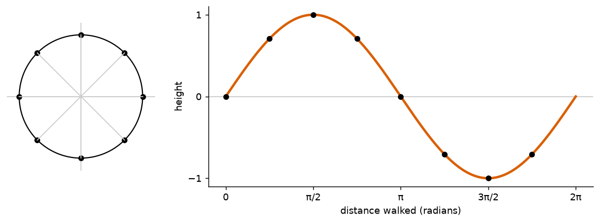
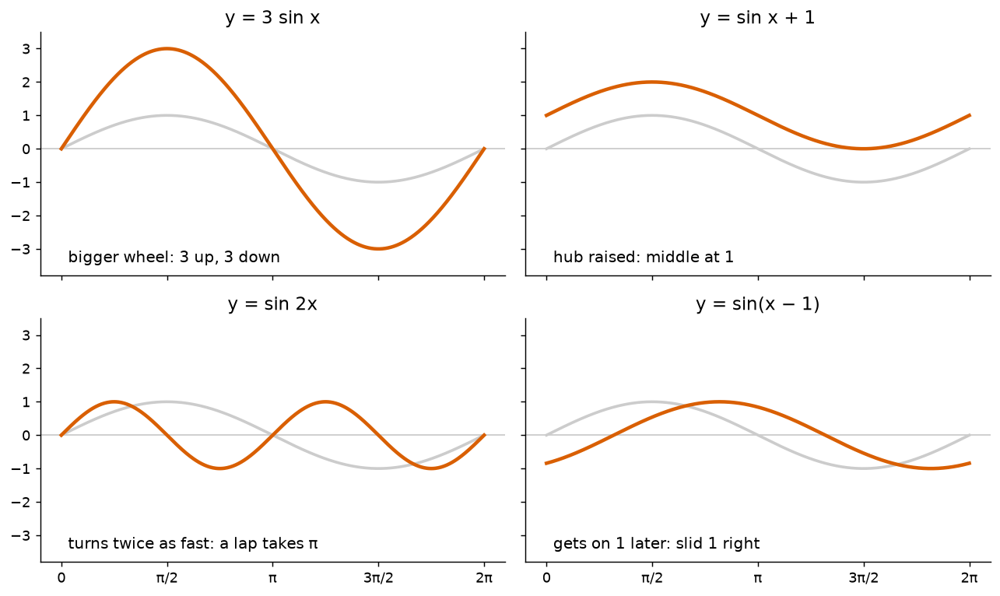
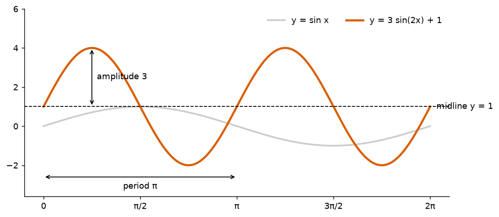
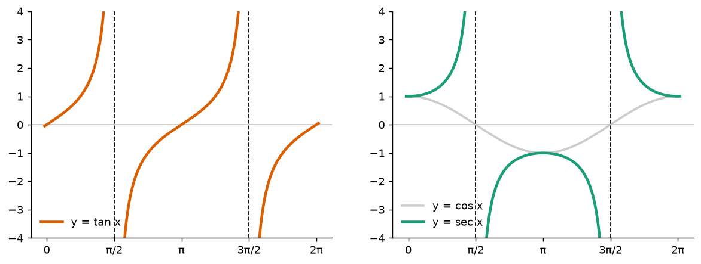
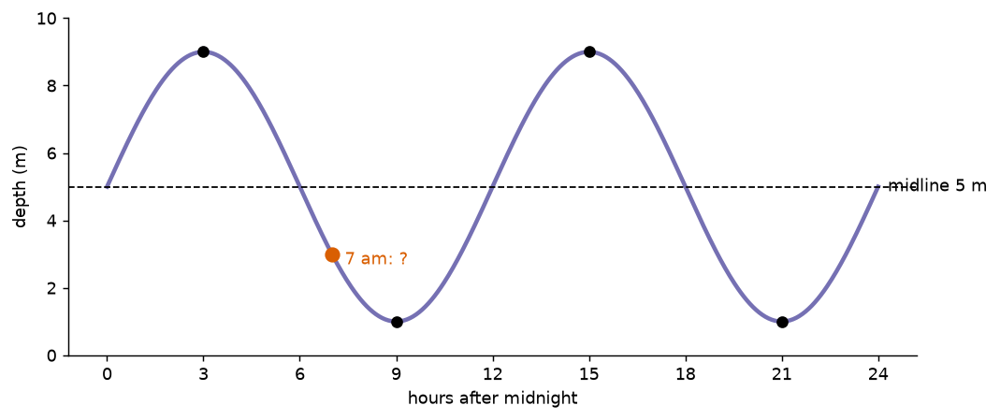

Trigonometry 2: the wave
Graphs of the six functions, and the tides
math
algebra
trigonometry
Cover the right-hand column. Answer each question in your head, then look.
Unrolling the circle
Walk round the circle of part 1, and keep track of your height.

| Your height when you start? | 0. |
| After a quarter turn, π/2? | 1, the top. |
| At π? | 0 again. |
| At 3π/2? | −1, the bottom. |
| At 2π? | 0, and it all starts over. |
| Draw height against distance walked. What shape? | The sine wave. |
| And the graph of cos? | The same wave, made from how far across you are. It starts at the top, 1: it is sin slid left by π/2. |
Move the slider. The purple walk round the circle is laid flat along the bottom of the wave, at the same scale: the wave is the circle unrolled.
NoteThe Law of the Wave
The graph of sin is the height of the point after walking x. It repeats every 2π, the length of one walk round.
Four dials
Ride a Ferris wheel. Your height, as the wheel turns, is a sine wave: the circle of part 1, stood on its edge. Change the wheel, and the wave changes with it. There are only a few things to change.

| The wheel has radius 3 instead of 1. How far above the hub do you go? | 3, and 3 below it. Every height is 3 times as big: y = 3 sin x. |
| What is that 3 called? | The amplitude: how far the wave goes above and below its middle. |
| The hub is raised 1. What happens to every height? | It goes up 1: y = sin x + 1. |
| Where is the middle of the wave now? | At y = 1, the hub’s height. That line is the midline. |
| The wheel turns twice as fast. How long does one lap take? | Half as long: π instead of 2π. y = sin 2x repeats every π. |
| What is the length of one lap called? | The period. |
| Why does a bigger number mean a shorter period? | Turning B times as fast fits B laps into 2π, so one lap takes 2π/B. |
| You get on 1 later. What happens to the wave? | Everything happens 1 later: the wave slides 1 to the right. y = sin(x − 1). |
| Why minus, if it moves right? | You start your ride when x − 1 = 0, that is, at x = 1. The start has moved from 0 to 1. |
Now turn the dials yourself. The grey wave is y = sin x, for comparison.
All three at once:

| y = 3 sin(2x) + 1: which wheel? | Radius 3, hub at 1, turning twice as fast. |
| Highest and lowest? | The hub plus or minus the radius: from 1 − 3 = −2 up to 1 + 3 = 4. |
| Its period? | 2π ÷ 2 = π. |
NoteThe Law of the Dials
y = A sin(B(x − h)) + k is a wheel of radius |A| with its hub at height k, turning B times as fast, boarded h late: amplitude |A|, midline y = k, period 2π/B, slid h to the right. The same holds for cos.
Where graphs break

| tan x = sin x ÷ cos x. What happens where cos x = 0? | We’d divide by 0: no value. Near there, tan shoots off up or down. |
| Where is cos x = 0? | At π/2 and 3π/2: straight up and straight down. |
| The dashed lines there are called? | Vertical asymptotes: lines the graph never reaches. |
| sec x = 1 ÷ cos x. Where does it break? | In the same places. |
| Where cos x is 1, sec x is? | 1. Where cos is at its top, sec is at its bottom: each piece is a U. |
| csc x and cot x? | Both divide by sin x, so they break where sin x = 0: at 0, π, 2π. |
| Why does tan repeat every π, not 2π? | It’s the slope of your radius. Half a turn later the radius points the other way along the same line, with the same slope. |
The whole table, for 0 ≤ x ≤ 2π. Each one breaks where the thing it divides by is 0.
| zeros | breaks | period | values | |
|---|---|---|---|---|
| sin | 0, π, 2π | none | 2π | −1 to 1 |
| cos | π/2, 3π/2 | none | 2π | −1 to 1 |
| tan | 0, π, 2π | π/2, 3π/2 | π | all |
| csc | none | 0, π, 2π | 2π | ≤ −1 or ≥ 1 |
| sec | none | π/2, 3π/2 | 2π | ≤ −1 or ≥ 1 |
| cot | π/2, 3π/2 | 0, π, 2π | π | all |
The tides

A harbour: high tide is 9 m deep at 3 am, low tide 1 m at 9 am, high again at 3 pm.
| The midline? | Halfway between 9 and 1: 5 m. |
| The amplitude? | From the midline to the top: 9 − 5 = 4 m. |
| The period? | High tide to high tide: 12 hours. |
| So B? | Period = 2π/B, so B = 2π/12 = π/6. |
| sin or cos? | cos starts at its top. High tide is at 3, so slide cos right by 3. |
| The model? | depth = 5 + 4 cos(π/6 · (t − 3)), t in hours after midnight. |
| How deep at 7 am? | 5 + 4 cos(π/6 · 4) = 5 + 4 cos(2π/3). |
Decide before you read on.
2π/3 is 120°, and cos 120° = −1/2 (part 1). So the depth is 5 + 4 · (−1/2) = 3 m.
Someone writes the model as 5 + 4 cos(12(t − 3)). Find the bug.
Decide before you read on.
12 is the period, not B. B is 2π/12 = π/6.
Exercises
Click Answer under an exercise to see it.
y = 2 sin(3x) − 1. Give the amplitude, period, midline, highest and lowest values.
Answer
Amplitude 2, period 2π/3, midline y = −1; highest −1 + 2 = 1, lowest −1 − 2 = −3.
Sketch y = cos x + 2 from 0 to 2π. Mark its midline, its top and its bottom.
Answer
Midline y = 2. Top 3 at x = 0 and 2π; bottom 1 at x = π.
Where does csc x break between 0 and 2π? Where is tan x zero?
Answer
csc breaks where sin x = 0: 0, π, 2π. tan x = sin x ÷ cos x is zero where sin x is: also 0, π, 2π.
In the harbour, how deep is it at 9 am? At which four times of day is it exactly 5 m deep?
Answer
1 m (low tide). 5 m is the midline, crossed halfway between high and low: midnight, 6 am, noon and 6 pm.